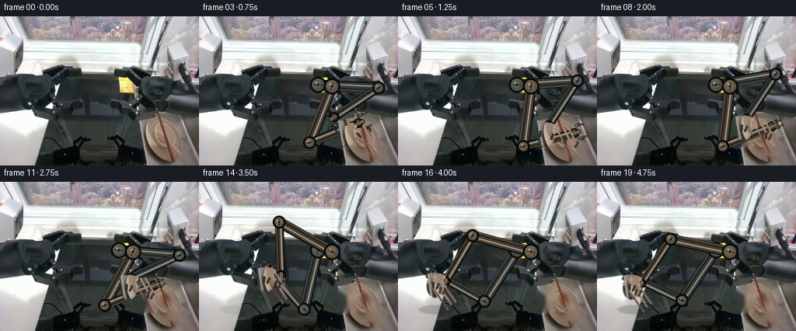
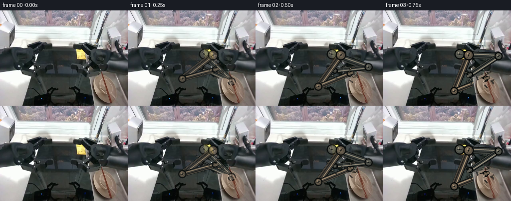
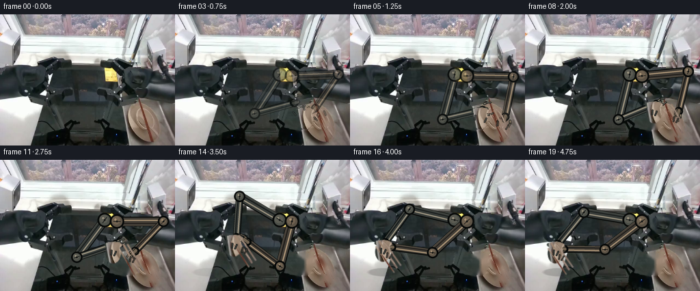
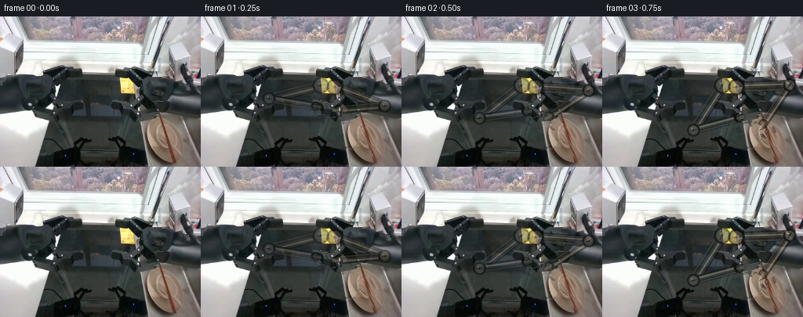
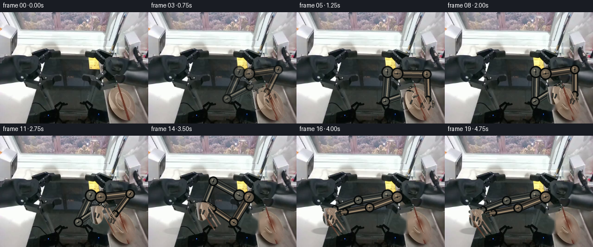
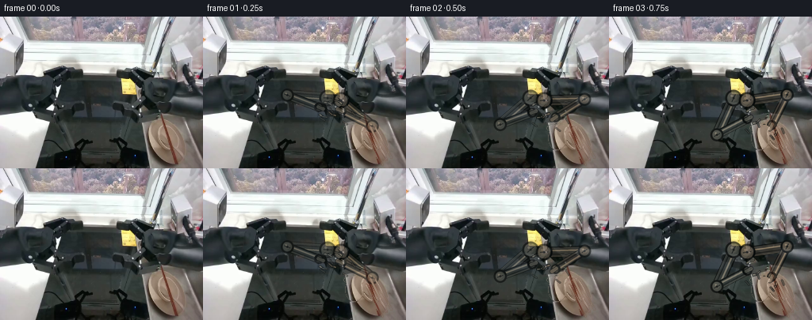

CODING AGENTS AS PIXEL WORLD MODELS
traex/DeepSeek-V4.1-Flash · common50_0007
点击播放 · 原生 RGB 像素
逐轮保存的候选
回放视频、检查图与代码变化。
每份候选均可单独播放。实际图片检查记录在下方工具轨迹中。
候选 01播放与检查图
点击播放 · 原生 RGB 像素


展开代码变化
--- 上一保存版本
+++ 本次保存版本
@@ -0,0 +1,492 @@
+"""Generate a rigid two-arm pick-and-place motion from the supplied first frame."""
+
+from __future__ import annotations
+
+import math
+from pathlib import Path
+
+import cv2
+import numpy as np
+from PIL import Image, ImageDraw
+
+import artifact_io
+
+
+ROOT = Path(__file__).resolve().parent
+WIDTH = 256
+HEIGHT = 192
+FRAMES = 20
+SUPERSAMPLE = 4
+
+
+def smoothstep(value: float) -> float:
+ value = float(np.clip(value, 0.0, 1.0))
+ return value * value * (3.0 - 2.0 * value)
+
+
+def phase(t: float, start: float, end: float) -> float:
+ return smoothstep((t - start) / (end - start))
+
+
+def mix(a, b, amount: float):
+ return np.asarray(a, dtype=np.float64) * (1.0 - amount) + np.asarray(
+ b, dtype=np.float64
+ ) * amount
+
+
+def ellipse_mask(shape, center, radii, softness=1.3):
+ height, width = shape
+ yy, xx = np.mgrid[:height, :width]
+ distance = (
+ ((xx - center[0]) / max(radii[0], 0.5)) ** 2
+ + ((yy - center[1]) / max(radii[1], 0.5)) ** 2
+ )
+ edge = np.sqrt(distance)
+ return np.clip((1.0 - edge) * max(radii) / softness + 0.5, 0.0, 1.0)
+
+
+def line_mask(shape, start, end, width, softness=0.9):
+ height, width_px = shape
+ yy, xx = np.mgrid[:height, :width_px]
+ px = xx - start[0]
+ py = yy - start[1]
+ vx = end[0] - start[0]
+ vy = end[1] - start[1]
+ denom = max(vx * vx + vy * vy, 1e-6)
+ amount = np.clip((px * vx + py * vy) / denom, 0.0, 1.0)
+ dx = px - amount * vx
+ dy = py - amount * vy
+ distance = np.sqrt(dx * dx + dy * dy)
+ return np.clip(width * 0.5 + softness * 0.5 - distance, 0.0, 1.0)
+
+
+def source_patch(source, mask):
+ rgba = np.zeros((HEIGHT, WIDTH, 4), dtype=np.uint8)
+ rgba[:, :, :3] = source
+ rgba[:, :, 3] = np.round(np.clip(mask, 0.0, 1.0) * 255.0).astype(np.uint8)
+ return rgba
+
+
+def make_clean_plate(source, masks):
+ combined = np.zeros((HEIGHT, WIDTH), dtype=np.uint8)
+ for mask in masks:
+ combined = np.maximum(combined, (mask > 0.35).astype(np.uint8) * 255)
+ kernel = np.ones((3, 3), dtype=np.uint8)
+ combined = cv2.dilate(combined, kernel, iterations=1)
+ return cv2.inpaint(source, combined, 5, cv2.INPAINT_TELEA)
+
+
+def paste_rgba(frame, rgba, translation=(0.0, 0.0), rotation=0.0, pivot=None):
+ if pivot is None:
+ pivot = (WIDTH * 0.5, HEIGHT * 0.5)
+ angle = math.degrees(rotation)
+ matrix = cv2.getRotationMatrix2D((float(pivot[0]), float(pivot[1])), angle, 1.0)
+ matrix[0, 2] += translation[0]
+ matrix[1, 2] += translation[1]
+ warped = cv2.warpAffine(
+ rgba,
+ matrix,
+ (WIDTH, HEIGHT),
+ flags=cv2.INTER_LINEAR,
+ borderMode=cv2.BORDER_CONSTANT,
+ borderValue=(0, 0, 0, 0),
+ )
+ alpha = warped[:, :, 3:4].astype(np.float32) / 255.0
+ frame[:] = np.round(
+ warped[:, :, :3].astype(np.float32) * alpha
+ + frame.astype(np.float32) * (1.0 - alpha)
+ ).clip(0, 255).astype(np.uint8)
+
+
+def add_soft_shadow(frame, center, radii, strength=0.26):
+ mask = ellipse_mask((HEIGHT, WIDTH), center, radii, softness=5.0)
+ alpha = np.clip(mask * strength, 0.0, 1.0)[:, :, None]
+ shadow = np.array([8.0, 9.0, 8.0], dtype=np.float32)
+ frame[:] = np.round(
+ frame.astype(np.float32) * (1.0 - alpha) + shadow * alpha
+ ).clip(0, 255).astype(np.uint8)
+
+
+class Layer:
+ """Small supersampled RGBA drawing surface."""
+
+ def __init__(self):
+ self.scale = SUPERSAMPLE
+ self.image = Image.new(
+ "RGBA", (WIDTH * self.scale, HEIGHT * self.scale), (0, 0, 0, 0)
+ )
+ self.draw = ImageDraw.Draw(self.image)
+
+ def point(self, point):
+ return (round(point[0] * self.scale), round(point[1] * self.scale))
+
+ def capsule(self, start, end, width, color):
+ p0 = self.point(start)
+ p1 = self.point(end)
+ radius = max(1, round(width * self.scale * 0.5))
+ self.draw.line((p0, p1), fill=color, width=radius * 2)
+ self.draw.ellipse(
+ (p0[0] - radius, p0[1] - radius, p0[0] + radius, p0[1] + radius),
+ fill=color,
+ )
+ self.draw.ellipse(
+ (p1[0] - radius, p1[1] - radius, p1[0] + radius, p1[1] + radius),
+ fill=color,
+ )
+
+ def polygon(self, points, color):
+ self.draw.polygon([self.point(p) for p in points], fill=color)
+
+ def circle(self, center, radius, color, outline=None, outline_width=1):
+ c = self.point(center)
+ r = round(radius * self.scale)
+ width = max(1, round(outline_width * self.scale))
+ self.draw.ellipse((c[0] - r, c[1] - r, c[0] + r, c[1] + r), fill=color)
+ if outline is not None:
+ self.draw.ellipse(
+ (c[0] - r, c[1] - r, c[0] + r, c[1] + r),
+ outline=outline,
+ width=width,
+ )
+
+ def composite(self, frame, opacity=1.0):
+ reduced = self.image.resize((WIDTH, HEIGHT), Image.Resampling.LANCZOS)
+ rgba = np.asarray(reduced, dtype=np.float32)
+ alpha = rgba[:, :, 3:4] / 255.0 * float(np.clip(opacity, 0.0, 1.0))
+ frame[:] = np.round(
+ rgba[:, :, :3] * alpha + frame.astype(np.float32) * (1.0 - alpha)
+ ).clip(0, 255).astype(np.uint8)
+
+
+def unit(vector):
+ vector = np.asarray(vector, dtype=np.float64)
+ length = float(np.linalg.norm(vector))
+ if length < 1e-6:
+ return np.array([1.0, 0.0])
+ return vector / length
+
+
+def perpendicular(vector):
+ return np.array([-vector[1], vector[0]], dtype=np.float64)
+
+
+def solve_ik(base, target, upper_length, forearm_length, bend_sign):
+ delta = np.asarray(target, dtype=np.float64) - np.asarray(base, dtype=np.float64)
+ distance = float(np.linalg.norm(delta))
+ max_reach = upper_length + forearm_length - 0.4
+ min_reach = abs(upper_length - forearm_length) + 0.4
+ distance_clamped = float(np.clip(distance, min_reach, max_reach))
+ direction = unit(delta)
+ along = (
+ distance_clamped * distance_clamped
+ + upper_length * upper_length
+ - forearm_length * forearm_length
+ ) / (2.0 * distance_clamped)
+ height = math.sqrt(max(upper_length * upper_length - along * along, 0.0))
+ normal = perpendicular(direction)
+ elbow = (
+ np.asarray(base, dtype=np.float64)
+ + direction * along
+ + normal * height * bend_sign
+ )
+ wrist = np.asarray(base, dtype=np.float64) + direction * distance_clamped
+ return elbow, wrist
+
+
+def draw_link(layer, start, end, width_start, width_end, colors):
+ start = np.asarray(start, dtype=np.float64)
+ end = np.asarray(end, dtype=np.float64)
+ direction = unit(end - start)
+ normal = perpendicular(direction)
+
+ # Dark silhouette and an asymmetric bevel make the links read as rigid metal.
+ layer.capsule(start, end, max(width_start, width_end) + 3.2, (8, 10, 9, 255))
+ layer.capsule(
+ start + normal * 0.8,
+ end + normal * 0.8,
+ max(width_start, width_end) + 0.2,
+ colors["edge"],
+ )
+ layer.capsule(start, end, max(width_start, width_end), colors["body"])
+ layer.capsule(
+ start - normal * 1.7,
+ end - normal * 1.7,
+ max(2.0, min(width_start, width_end) * 0.25),
+ colors["highlight"],
+ )
+ layer.capsule(
+ start + normal * (max(width_start, width_end) * 0.26),
+ end + normal * (max(width_end, width_start) * 0.26),
+ max(1.4, min(width_start, width_end) * 0.13),
+ colors["shade"],
+ )
+
+
+def draw_joint(layer, center, radius, colors, rotation=0.0):
+ layer.circle(center, radius + 1.5, (7, 9, 8, 255))
+ layer.circle(center, radius, colors["edge"], (11, 13, 12, 255), 1.0)
+ layer.circle(
+ (center[0] - radius * 0.13, center[1] - radius * 0.18),
+ radius * 0.68,
+ colors["joint"],
+ )
+ layer.circle(
+ (center[0] - radius * 0.25, center[1] - radius * 0.30),
+ radius * 0.18,
+ colors["highlight"],
+ )
+ axle = np.array([math.cos(rotation), math.sin(rotation)])
+ layer.capsule(
+ np.asarray(center) - axle * radius * 0.52,
+ np.asarray(center) + axle * radius * 0.52,
+ 1.2,
+ colors["shade"],
+ )
+ layer.circle(center, 1.35, (22, 24, 22, 255))
+
+
+def draw_gripper(layer, wrist, direction, opening, colors, close_amount):
+ direction = unit(direction)
+ normal = perpendicular(direction)
+ palm = np.asarray(wrist, dtype=np.float64)
+ finger_root = palm + direction * 4.5
+ separation = 3.3 + (1.0 - close_amount) * 5.2
+ length = 9.2
+ for side in (-1.0, 1.0):
+ root = finger_root + normal * separation * side
+ knuckle = root + direction * 4.0 + normal * (0.9 * side)
+ tip = knuckle + direction * (length - 4.0) - normal * (1.2 * side)
+ layer.capsule(root, knuckle, 3.3, (7, 9, 8, 255))
+ layer.capsule(root, knuckle, 2.2, colors["edge"])
+ layer.capsule(
+ root - normal * 0.4, knuckle - normal * 0.4, 0.8, colors["highlight"]
+ )
+ layer.capsule(knuckle, tip, 2.7, (7, 9, 8, 255))
+ layer.capsule(knuckle, tip, 1.7, colors["body"])
+ layer.capsule(
+ knuckle - normal * 0.25,
+ tip - normal * 0.25,
+ 0.6,
+ colors["highlight"],
+ )
+ layer.capsule(
+ palm - direction * 1.2,
+ finger_root + direction * 1.0,
+ 6.0,
+ (8, 10, 9, 255),
+ )
+ layer.capsule(
+ palm - direction * 1.2,
+ finger_root + direction * 1.0,
+ 4.5,
+ colors["joint"],
+ )
+
+
+def draw_arm(frame, shoulder, wrist, bend_sign, close_amount, colors, opacity=1.0):
+ elbow, clamped_wrist = solve_ik(
+ shoulder, wrist, 78.0, 68.0, bend_sign=bend_sign
+ )
+ direction = unit(clamped_wrist - elbow)
+ layer = Layer()
+ draw_link(layer, shoulder, elbow, 11.0, 8.0, colors)
+ draw_link(layer, elbow, clamped_wrist, 8.0, 5.2, colors)
+ draw_joint(layer, shoulder, 9.0, colors, rotation=math.atan2(
+ elbow[1] - shoulder[1], elbow[0] - shoulder[0]
+ ))
+ draw_joint(layer, elbow, 6.7, colors, rotation=math.atan2(
+ clamped_wrist[1] - elbow[1], clamped_wrist[0] - elbow[0]
+ ))
+ draw_joint(layer, clamped_wrist, 4.8, colors, rotation=math.atan2(
+ direction[1], direction[0]
+ ))
+ draw_gripper(
+ layer, clamped_wrist, direction, opening=4.0,
+ colors=colors, close_amount=close_amount
+ )
+ layer.composite(frame, opacity=opacity)
+ return clamped_wrist
+
+
+def make_object_layers(source, bowl_mask, chopstick_mask):
+ bowl = source_patch(source, bowl_mask)
+ chopsticks = source_patch(source, chopstick_mask)
+ return bowl, chopsticks
+
+
+def main():
+ source = np.asarray(Image.open(ROOT / "first_frame.png").convert("RGB"))
+ if source.shape != (HEIGHT, WIDTH, 3):
+ raise ValueError(f"Unexpected first frame shape: {source.shape}")
+
+ # The bowl is the compact pale/beige form at the right edge of the sink run.
+ bowl_rim = ellipse_mask(
+ (HEIGHT, WIDTH), (190.0, 141.0), (13.0, 5.0), softness=1.0
+ )
+ bowl_body = ellipse_mask(
+ (HEIGHT, WIDTH), (190.0, 153.0), (11.2, 15.0), softness=1.0
+ )
+ bowl_mask = np.maximum(bowl_rim, bowl_body)
+
+ # Two adjacent brown utensils are isolated as narrow rigid objects.
+ chopstick_mask = np.maximum(
+ line_mask((HEIGHT, WIDTH), (211.0, 140.0), (231.0, 181.0), 3.0, 0.8),
+ line_mask((HEIGHT, WIDTH), (217.0, 140.0), (237.0, 178.0), 2.7, 0.8),
+ )
+ chopstick_mask = np.maximum(
+ chopstick_mask,
+ line_mask((HEIGHT, WIDTH), (205.0, 147.0), (226.0, 187.0), 2.3, 0.7),
+ )
+
+ clean_plate = make_clean_plate(source, [bowl_mask, chopstick_mask])
+ bowl_layer, chopstick_layer = make_object_layers(
+ source, bowl_mask, chopstick_mask
+ )
+
+ bowl_origin = np.array([0.0, 0.0])
+ chop_origin = np.array([0.0, 0.0])
+ bowl_lift = np.array([-3.0, -15.0])
+ chop_lift = np.array([-4.0, -14.0])
+ bowl_sink = np.array([-143.0, -3.0])
+ chop_sink = np.array([-166.0, -7.0])
+
+ left_shoulder = np.array([153.0, 88.0])
+ right_shoulder = np.array([171.0, 90.0])
+ left_home = np.array([141.0, 112.0])
+ right_home = np.array([169.0, 116.0])
+
+ colors_left = {
+ "body": (56, 60, 57, 255),
+ "edge": (76, 79, 72, 255),
+ "joint": (91, 91, 82, 255),
+ "highlight": (151, 143, 124, 255),
+ "shade": (24, 28, 27, 255),
+ }
+ colors_right = {
+ "body": (66, 61, 54, 255),
+ "edge": (91, 82, 69, 255),
+ "joint": (112, 98, 80, 255),
+ "highlight": (167, 145, 116, 255),
+ "shade": (29, 27, 24, 255),
+ }
+
+ frames = np.empty((FRAMES, HEIGHT, WIDTH, 3), dtype=np.uint8)
+ for index in range(FRAMES):
+ if index == 0:
+ frames[index] = source
+ continue
+
+ t = index / (FRAMES - 1)
+ frame = clean_plate.copy()
+
+ reach = phase(t, 0.00, 0.27)
+ close = phase(t, 0.25, 0.34)
+ lift = phase(t, 0.32, 0.50)
+ carry = phase(t, 0.48, 0.88)
+ lower = phase(t, 0.88, 1.00)
+
+ # A compact arc keeps the carried objects inside the arms' working envelope.
+ arc = np.sin(math.pi * carry)
+ bowl_move = (
+ bowl_origin * (1.0 - lift)
+ + bowl_lift * lift
+ )
+ chop_move = (
+ chop_origin * (1.0 - lift)
+ + chop_lift * lift
+ )
+ bowl_move = bowl_move * (1.0 - carry) + (
+ bowl_lift + bowl_sink + np.array([0.0, -17.0 * arc])
+ ) * carry
+ chop_move = chop_move * (1.0 - carry) + (
+ chop_lift + chop_sink + np.array([0.0, -20.0 * arc])
+ ) * carry
+ bowl_move += np.array([0.0, 1.2 * lower])
+ chop_move += np.array([0.0, 1.4 * lower])
+
+ # Sink-side contact shadow arrives with the objects.
+ shadow_amount = smoothstep((carry - 0.55) / 0.35)
+ if shadow_amount > 0.01:
+ add_soft_shadow(
+ frame,
+ (48.0, 164.0),
+ (22.0, 6.0),
+ strength=0.18 * shadow_amount,
+ )
+
+ bowl_center = np.array([190.0, 151.0]) + bowl_move
+ chop_center = np.array([222.0, 160.0]) + chop_move
+
+ # The wrists sit behind the grasped objects; fingers are drawn over them.
+ left_wrist_target = bowl_center + np.array([4.0, -11.0])
+ right_wrist_target = chop_center + np.array([5.0, -10.0])
+ left_wrist = mix(left_home, left_wrist_target, reach)
+ right_wrist = mix(right_home, right_wrist_target, reach)
+
+ # The source already contains the robot's dark shoulder housing. These
+ # overlays begin inside it and remain anchored for the full motion.
+ opacity = 0.72 + 0.28 * smoothstep((index - 1) / 2.0)
+ draw_arm(
+ frame, left_shoulder, left_wrist, -1.0, close,
+ colors_left, opacity=opacity
+ )
+ draw_arm(
+ frame, right_shoulder, right_wrist, 1.0, close,
+ colors_right, opacity=opacity
+ )
+
+ bowl_rotation = math.radians(-2.5) * carry
+ chop_rotation = math.radians(5.5) * (lift * 0.4 + carry)
+ paste_rgba(
+ frame,
+ bowl_layer,
+ translation=(float(bowl_move[0]), float(bowl_move[1])),
+ rotation=bowl_rotation,
+ pivot=(190.0, 151.0),
+ )
+ paste_rgba(
+ frame,
+ chopstick_layer,
+ translation=(float(chop_move[0]), float(chop_move[1])),
+ rotation=chop_rotation,
+ pivot=(222.0, 160.0),
+ )
+
+ # Draw only the finger tips again so the grasp reads as contact rather
+ # than the utensils floating over the mechanism.
+ fingertips = Layer()
+ for wrist, direction, grip_center, grip_normal in (
+ (
+ left_wrist,
+ unit(bowl_center + np.array([0.0, 4.0]) - left_wrist),
+ bowl_center,
+ np.array([1.0, 0.0]),
+ ),
+ (
+ right_wrist,
+ unit(chop_center + np.array([0.0, 4.0]) - right_wrist),
+ chop_center,
+ np.array([1.0, 0.0]),
+ ),
+ ):
+ direction = unit(direction)
+ normal = perpendicular(direction)
+ separation = 3.2 + (1.0 - close) * 5.3
+ for side in (-1.0, 1.0):
+ root = wrist + direction * 10.5 + normal * separation * side
+ tip = root + direction * 5.8 - normal * 1.0 * side
+ fingertips.capsule(root, tip, 2.5, (7, 9, 8, 255))
+ fingertips.capsule(root, tip, 1.6, (
+ colors_left["body"] if wrist is left_wrist else colors_right["body"]
+ ))
+ fingertips.composite(frame, opacity=opacity)
+
+ frames[index] = frame
+
+ # Preserve the source exactly at the required transition point.
+ frames[0] = source
+ artifact_io.save(frames, ROOT)
+
+
+if __name__ == "__main__":
+ main()
候选 02播放与检查图
点击播放 · 原生 RGB 像素


展开代码变化
--- 上一保存版本
+++ 本次保存版本
@@ -285,7 +285,7 @@
def draw_arm(frame, shoulder, wrist, bend_sign, close_amount, colors, opacity=1.0):
elbow, clamped_wrist = solve_ik(
- shoulder, wrist, 78.0, 68.0, bend_sign=bend_sign
+ shoulder, wrist, 68.0, 60.0, bend_sign=bend_sign
)
direction = unit(clamped_wrist - elbow)
layer = Layer()
@@ -425,13 +425,13 @@
# The source already contains the robot's dark shoulder housing. These
# overlays begin inside it and remain anchored for the full motion.
- opacity = 0.72 + 0.28 * smoothstep((index - 1) / 2.0)
+ opacity = 0.42 + 0.58 * smoothstep((index - 1) / 6.0)
draw_arm(
- frame, left_shoulder, left_wrist, -1.0, close,
+ frame, left_shoulder, left_wrist, 1.0, close,
colors_left, opacity=opacity
)
draw_arm(
- frame, right_shoulder, right_wrist, 1.0, close,
+ frame, right_shoulder, right_wrist, -1.0, close,
colors_right, opacity=opacity
)
候选 03播放与检查图
点击播放 · 原生 RGB 像素

展开代码变化
--- 上一保存版本
+++ 本次保存版本
@@ -285,7 +285,7 @@
def draw_arm(frame, shoulder, wrist, bend_sign, close_amount, colors, opacity=1.0):
elbow, clamped_wrist = solve_ik(
- shoulder, wrist, 68.0, 60.0, bend_sign=bend_sign
+ shoulder, wrist, 51.0, 43.0, bend_sign=bend_sign
)
direction = unit(clamped_wrist - elbow)
layer = Layer()
@@ -347,11 +347,11 @@
chop_origin = np.array([0.0, 0.0])
bowl_lift = np.array([-3.0, -15.0])
chop_lift = np.array([-4.0, -14.0])
- bowl_sink = np.array([-143.0, -3.0])
- chop_sink = np.array([-166.0, -7.0])
-
- left_shoulder = np.array([153.0, 88.0])
- right_shoulder = np.array([171.0, 90.0])
+ bowl_sink = np.array([-134.0, 4.0])
+ chop_sink = np.array([-157.0, 1.0])
+
+ left_shoulder = np.array([157.0, 103.0])
+ right_shoulder = np.array([174.0, 106.0])
left_home = np.array([141.0, 112.0])
right_home = np.array([169.0, 116.0])
@@ -425,7 +425,7 @@
# The source already contains the robot's dark shoulder housing. These
# overlays begin inside it and remain anchored for the full motion.
- opacity = 0.42 + 0.58 * smoothstep((index - 1) / 6.0)
+ opacity = 0.55 + 0.45 * smoothstep((index - 1) / 5.0)
draw_arm(
frame, left_shoulder, left_wrist, 1.0, close,
colors_left, opacity=opacity
候选 04播放与检查图
候选 05播放与检查图
点击播放 · 原生 RGB 像素


展开代码变化
--- 上一保存版本
+++ 本次保存版本
@@ -309,8 +309,38 @@
def make_object_layers(source, bowl_mask, chopstick_mask):
+ # Lift the bowl's source pixels and restore the occluded lower arc with the
+ # sampled local ceramic shade, so its silhouette remains readable in motion.
bowl = source_patch(source, bowl_mask)
+ alpha = bowl[:, :, 3].astype(np.float32) / 255.0
+ ceramic = np.array([177.0, 161.0, 143.0], dtype=np.float32)
+ bowl[:, :, :3] = np.round(
+ bowl[:, :, :3].astype(np.float32) * alpha[:, :, None]
+ + ceramic * (1.0 - alpha[:, :, None])
+ ).clip(0, 255).astype(np.uint8)
+ bowl[:, :, 3] = np.round(
+ np.clip(bowl_mask * 1.18, 0.0, 1.0) * 255.0
+ ).astype(np.uint8)
+
chopsticks = source_patch(source, chopstick_mask)
+ shaft = np.zeros((HEIGHT, WIDTH), dtype=np.float32)
+ for start, end, width in (
+ ((211.0, 140.0), (231.0, 181.0), 2.7),
+ ((217.0, 140.0), (237.0, 178.0), 2.5),
+ ((205.0, 147.0), (226.0, 187.0), 2.2),
+ ):
+ shaft = np.maximum(shaft, line_mask(
+ (HEIGHT, WIDTH), start, end, width, 0.7
+ ))
+ shaft_alpha = chopsticks[:, :, 3].astype(np.float32) / 255.0
+ wood = np.array([118.0, 83.0, 58.0], dtype=np.float32)
+ chopsticks[:, :, :3] = np.round(
+ chopsticks[:, :, :3].astype(np.float32) * shaft_alpha[:, :, None]
+ + wood * (1.0 - shaft_alpha[:, :, None])
+ ).clip(0, 255).astype(np.uint8)
+ chopsticks[:, :, 3] = np.round(
+ np.clip(np.maximum(shaft, chopstick_mask * 0.9), 0.0, 1.0) * 255.0
+ ).astype(np.uint8)
return bowl, chopsticks
可观测工具轨迹
实际执行的命令与返回图片。
命令 1exit 0
/bin/bash -c "pwd && rg --files -g '"'!*'"\\.git*' | sort"
命令 2exit 0
/bin/bash -c "sed -n '1,240p' prompt.txt"
命令 3exit 0
/bin/bash -c "sed -n '1,280p' GENERATION_RULES.md"
命令 4exit 0
/bin/bash -c 'cat task_spec.json'
命令 5exit 0
/bin/bash -c "sed -n '1,280p' artifact_io.py"
命令 6exit 0
/bin/bash -c "python - <<'PY'
from PIL import Image
import numpy as np
im=Image.open('first_frame.png')
print(im.mode, im.size, im.info)
a=np.array(im.convert('RGB'))
print('shape',a.shape,'min',a.min((0,1)),'max',a.max((0,1)),'mean',a.mean((0,1)))
# 32x24 block mean and dominant colors
for y in range(0,192,8):
row=[]
for x in range(0,256,8):
b=a[y:y+8,x:x+8].reshape(-1,3).mean(0)
# ANSI truecolor background
row.append(f'\\x1b[48;2;{b[0]:.0f};{b[1]:.0f};{b[2]:.0f}m ')
print(''.join(row)+'\\x1b[0m')
PY"命令 7exit 0
/bin/bash -c "python - <<'PY'
from PIL import Image
import numpy as np
im=np.array(Image.open('first_frame.png').convert('RGB'))
# luminance ascii at 2x4 blocks
chars=' .:-=+*#%@'
for y in range(0,192,4):
line=''
for x in range(0,256,2):
b=im[y:y+4,x:x+2].mean((0,1))
lum=0.2126*b[0]+0.7152*b[1]+0.0722*b[2]
line+=chars[min(9,int(lum/256*10))]
print(f'{y:03d} '+line)
PY"命令 8exit 0
/bin/bash -c "python - <<'PY'
try:
import cv2; print('cv2',cv2.__version__)
except Exception as e: print('no cv2',e)
try:
import scipy; print('scipy',scipy.__version__)
except Exception as e: print('no scipy',e)
try:
import skimage; print('skimage',skimage.__version__)
except Exception as e: print('no skimage',e)
PY"命令 9exit 0
/bin/bash -c 'command -v chafa || true; command -v viu || true; command -v jp2 || true; command -v img2txt || true; command -v ffmpeg || true'
命令 10exit 0
/bin/bash -c "python - <<'PY'
import cv2, numpy as np
from PIL import Image
im=np.array(Image.open('first_frame.png').convert('RGB'))
# kmeans in Lab/HSV with 12 clusters, sample all pixels
Z=im.reshape(-1,3).astype(np.float32)
crit=(cv2.TERM_CRITERIA_EPS+cv2.TERM_CRITERIA_MAX_ITER,50,0.5)
_,lab,cent=cv2.kmeans(Z,12,None,crit,5,cv2.KMEANS_PP_CENTERS)
cent=cent.astype(np.uint8)
# order by luminance
idx=np.argsort(cent@np.array([.2126,.7152,.0722]))
remap=np.zeros(12,int); remap[idx]=np.arange(12)
q=remap[lab.ravel()].reshape(192,256)
chars='0123456789AB'
print('palette:')
for i in idx:
print(chars[remap[i]], cent[i], 'lum',round(float(cent[i]@np.array([.2126,.7152,.0722])),1))
for y in range(0,192,3):
line=''
for x in range(0,256,2):
vals=q[y:y+3,x:x+2].ravel(); c=np.bincount(vals,minlength=12).argmax()
line+=chars[c]
print(f'{y:03d} '+line)
PY"命令 11exit 0
/bin/bash -c "python - <<'PY'
import cv2, numpy as np
from PIL import Image
im=np.array(Image.open('first_frame.png').convert('RGB'))
g=cv2.cvtColor(im,cv2.COLOR_RGB2GRAY)
e=cv2.Canny(g,35,90)
# use 2x3 cells, gradient density
for y in range(0,192,3):
line=''
for x in range(0,256,2):
d=e[y:y+3,x:x+2].mean()
line += ' ' if d<3 else ('.' if d<12 else ('+' if d<30 else ('#' if d<60 else '@')))
print(f'{y:03d} '+line)
PY"命令 12exit 0
/bin/bash -c "python - <<'PY'
import cv2, numpy as np
from PIL import Image
im=np.array(Image.open('first_frame.png').convert('RGB'))
g=cv2.cvtColor(im,cv2.COLOR_RGB2GRAY)
e=cv2.Canny(g,20,60)
# Print 2x2 cells with characters based on RGB/edge
for y in range(40,132,2):
line=''
for x in range(150,256,2):
rgb=im[y:y+2,x:x+2].mean((0,1)); ed=e[y:y+2,x:x+2].max()
r,gg,b=rgb
lum=(r+gg+b)/3
if ed>0:
c='|' if abs(int(r)-int(gg))<20 and abs(int(gg)-int(b))<20 else '/'
else:
c=' .:-=+*#%@'[min(9,int(lum/256*10))]
line+=c
print(f'{y:03d} '+line)
PY"命令 13exit 0
/bin/bash -c "python - <<'PY'
import cv2, numpy as np
from PIL import Image
im=np.array(Image.open('first_frame.png').convert('RGB'))
hsv=cv2.cvtColor(im,cv2.COLOR_RGB2HSV)
H,S,V=[hsv[:,:,i] for i in range(3)]
# components for low saturation bright stuff, y>=55
for name,mask in [
('white',(V>145)&(S<45)),
('verywhite',(V>190)&(S<35)),
('yellow',(H>18)&(H<45)&(S>60)&(V>90)),
('brown',(H>2)&(H<25)&(S>35)&(V>35)&(V<180)),
('metal',(S<30)&(V>55)&(V<220)),
('dark',(V<60)),
]:
m=(mask & (np.indices(V.shape)[0]>55)).astype(np.uint8)*255
m=cv2.morphologyEx(m,cv2.MORPH_OPEN,np.ones((2,2),np.uint8))
n,lab,stats,cents=cv2.connectedComponentsWithStats(m,8)
comps=[]
for i in range(1,n):
x,y,w,h,area=stats[i]
if area>=8:
comps.append((area,x,y,w,h,tuple(np.round(cents[i]).astype(int))))
comps=sorted(comps,reverse=True)[:25]
print('\\n',name,'pixels',int(mask.sum()))
for c in comps: print(c)
PY"命令 14exit 0
/bin/bash -c "python - <<'PY'
from PIL import Image
import numpy as np
im=Image.open('first_frame.png').convert('RGB')
# scaled crops, report nearest and bicubic save in .tmp for maybe textual impossible
# print coords for high chroma patches by 4x4
hsv=np.array(im.convert('HSV'))
for y in range(60,192,4):
line=''
for x in range(0,256,4):
h,s,v=np.array(im.crop((x,y,x+4,y+4)).convert('HSV')).reshape(-1,3).mean(0)
# categorize
if s>80 and 15<h<40: c='Y'
elif s>50 and h<15: c='R'
elif s>50 and h<55: c='G'
elif s>45 and h<90: c='B'
elif v<60:c=' '
elif v<110:c='.'
elif v<160:c='-'
elif v<210:c='+'
else:c='#'
line+=c
print(f'{y:03d} '+line)
PY"命令 15exit 0
/bin/bash -c "python - <<'PY'
import cv2, numpy as np
from PIL import Image
im=np.array(Image.open('first_frame.png').convert('RGB'))
# downsample to 128x96 and convert with ANSI bg + small glyph by luminance
sm=cv2.resize(im,(128,96),interpolation=cv2.INTER_AREA)
for y in range(0,96):
line=''
for x in range(0,128):
r,g,b=map(int,sm[y,x]); lum=(r+g+b)/3
# block color using Unicode upper half? no. print 1 char with color fg approximate
line+=f'\\x1b[38;2;{r};{g};{b}mâ'
print(line+'\\x1b[0m')
PY"命令 16exit 0
/bin/bash -c "python - <<'PY'
import cv2, numpy as np
from PIL import Image
im=np.array(Image.open('first_frame.png').convert('RGB'))
g=cv2.cvtColor(im,cv2.COLOR_RGB2GRAY)
# hough lines
edges=cv2.Canny(g,40,100)
lines=cv2.HoughLinesP(edges,1,np.pi/180,threshold=25,minLineLength=15,maxLineGap=3)
print('lines',0 if lines is None else len(lines))
if lines is not None:
arr=[]
for l in lines[:,0]:
x1,y1,x2,y2=map(int,l); length=((x2-x1)**2+(y2-y1)**2)**.5
ang=np.degrees(np.arctan2(y2-y1,x2-x1))
arr.append((round(length,1),round(ang,1),x1,y1,x2,y2))
for l in sorted(arr,reverse=True)[:80]: print(l)
PY"命令 17exit 0
/bin/bash -c "python - <<'PY'
import cv2, numpy as np
from PIL import Image
im=np.array(Image.open('first_frame.png').convert('RGB'))
g=cv2.cvtColor(im,cv2.COLOR_RGB2GRAY)
for th in [30,45,60,80,100]:
m=(g>th).astype(np.uint8)*255
# show tiny lines at 2x3 y>=60
print('\\nth',th)
for y in range(60,192,3):
line=''
for x in range(0,256,2):
d=m[y:y+3,x:x+2].mean()
line += ' ' if d<40 else ('.' if d<100 else ('+' if d<180 else '#'))
print(f'{y:03d} '+line)
PY"命令 18exit 0
/bin/bash -c "python - <<'PY'
import numpy as np, cv2
from PIL import Image
im=np.array(Image.open('first_frame.png').convert('RGB'))
g=cv2.cvtColor(im,cv2.COLOR_RGB2GRAY)
# inspect bright vertical structures x 180-220 y 120-190, print chars exact pixel every 1x2
chars=' .:-=+*#%@'
for y in range(115,192,2):
line=''
for x in range(170,256):
v=g[y:y+2,x].mean()
line+=chars[min(9,int(v/256*10))]
print(f'{y:03d} '+line)
PY"命令 19exit 0
/bin/bash -c "python - <<'PY'
import cv2, numpy as np
from PIL import Image
im=np.array(Image.open('first_frame.png').convert('RGB'))
# color-pixel snippets with coordinates for hue cluster
hsv=cv2.cvtColor(im,cv2.COLOR_RGB2HSV); H,S,V=[hsv[:,:,i].astype(int) for i in range(3)]
mask=(H>5)&(H<40)&(S>45)&(V>60)
# bbox in regions
for box in [(140,60,230,110),(180,110,256,192),(0,110,80,192),(80,100,160,160)]:
x0,y0,x1,y1=box
ys,xs=np.where(mask[y0:y1,x0:x1])
print(box,'n',len(xs),'bbox',None if not len(xs) else (x0+xs.min(),y0+ys.min(),x0+xs.max(),y0+ys.max()))
# nearest colors for nonzero points
if len(xs):
pts=im[y0+ys,x0+xs]
print('mean',pts.mean(0),'median',np.median(pts,0),'extent',np.quantile(pts,[.1,.9],axis=0))
# full scan yellow patches
PY"命令 20exit 0
/bin/bash -c "python - <<'PY'
from PIL import Image
import numpy as np
im=Image.open('first_frame.png').convert('RGB')
# 2x2 crops displayed with truecolor halfblocks around all scene, 128x96 terminal
arr=np.array(im.resize((128,96),Image.Resampling.LANCZOS))
for y in range(0,96,2):
s=''
for x in range(128):
r,g,b=arr[y,x]; r2,g2,b2=arr[y+1,x]
s += f'\\x1b[38;2;{r};{g};{b}m\\x1b[48;2;{r2};{g2};{b2}mâÂÂ'
print(s+'\\x1b[0m')
PY"命令 21exit 0
/bin/bash -c "python - <<'PY'
import numpy as np, cv2
from PIL import Image
im=np.array(Image.open('first_frame.png').convert('RGB'))
g=cv2.cvtColor(im,cv2.COLOR_RGB2GRAY)
# Save edge overlay crops to workspace? allowed but only output artifacts expected; use .tmp
# estimate dark robot mask by threshold <85 in y70-130, x60-180
for name,mask in [('dark70',g<70),('dark100',g<100),('dark130',g<130),('bright',g>150)]:
m=(mask.astype(np.uint8)*255)
# print bbox and area by zones
print(name)
for box in [(60,60,180,125),(0,100,100,190),(100,80,200,160),(140,55,220,125)]:
x0,y0,x1,y1=box
ys,xs=np.where(mask[y0:y1,x0:x1])
if len(xs): print(box,len(xs),(x0+xs.min(),y0+ys.min(),x0+xs.max(),y0+ys.max()))
# count dark x in rows
for y in range(70,130,5):
xs=np.where(g[y]<90)[0]
# runs
if len(xs):
cuts=np.r_[0,np.flatnonzero(np.diff(xs)>1)+1,len(xs)]
runs=[(int(xs[a]),int(xs[b-1])) for a,b in zip(cuts[:-1],cuts[1:]) if b-a>=3]
print(y,runs)
PY"命令 22exit 0
/bin/bash -c "python - <<'PY'
from PIL import Image
import numpy as np
im=np.array(Image.open('first_frame.png').convert('RGB'))
# Print ANSI 24-bit tiny color for crop 100:240,60:160 at 2x2 downsample 70x50. max 35k but 70*50*40=140k. use 1 char foreground square? ANSI uses 20 chars/px, still 70k. use 64 colors mapping to ascii colored? Use xterm 256 nearest colors with colored bg, 2 spaces per pixel = 4 chars => 14k.
# map RGB to xterm 256 palette
pal=np.array([(0,0,0)]+[(r,g,b) for r in [0,95,135,175,215,255] for g in [0,95,135,175,215,255] for b in [0,95,135,175,215,255]])
# use simple 3-3-2 RGB cube ANSI 256 actual nearest table from xterm
pal=[]
for r in range(6):
for g in range(6):
for b in range(6):
conv=lambda v: 0 if v==0 else 55+v*40
pal.append((conv(r),conv(g),conv(b)))
pal=np.array(pal)
# grayscale 232-255 not important
crop=im[60:160,100:240]
sm=crop.reshape(50,2,70,2,3).mean((1,3)).astype(np.uint8)
d=((sm[:,:,None,:].astype(int)-pal[None,None,:,:])**2).sum(3)
idx=d.argmin(2)+16
for row in idx:
print(''.join(f'\\x1b[48;5;{v}m ' for v in row)+'\\x1b[0m')
PY"命令 23exit 0
/bin/bash -c "python - <<'PY'
from PIL import Image
import numpy as np
im=np.array(Image.open('first_frame.png').convert('RGB'))
# quantize each channel to levels; use chars mapping to 16 codebook colors with semantics
# palette centers by hue/sat/value categories handcrafted
pal=np.array([
[10,14,15],[32,38,40],[50,55,58],[75,78,80],[105,100,96],[130,125,120],[160,155,152],[190,188,185],[225,228,228],[250,250,248],
[100,65,55],[145,105,90],[190,145,120],[210,180,140],[240,225,140],[110,130,150]
],float)
chars='0123456789ABCDEF'
for box in [(50,55,150,125),(80,55,200,130),(120,55,230,130),(40,100,140,160)]:
x0,y0,x1,y1=box
sm=im[y0:y1,x0:x1]
print('\\nBOX',box)
for y in range(0,sm.shape[0],3):
line=''
for x in range(0,sm.shape[1],2):
b=sm[y:y+3,x:x+2].mean((0,1))
line += chars[np.argmin(((pal-b)**2).sum(1))]
print(f'{y0+y:03d} '+line)
PY"命令 24exit 0
/bin/bash -c "python - <<'PY'
from PIL import Image
import numpy as np
im=np.array(Image.open('first_frame.png').convert('RGB'))
# inspect exact RGB profiles at y rows, x ranges
for y in [60,65,70,75,80,85,90,95,100,105,110,115,120,125,130,140,150,160,170,180,190]:
print('\\ny',y)
for x in range(0,256,10):
b=im[y:y+1,x:x+10].mean((0,1)).astype(int)
print(f'{x}:{b[0]:03d},{b[1]:03d},{b[2]:03d}',end=' ')
print()
PY"命令 25exit 0
/bin/bash -c "python - <<'PY'
import cv2, numpy as np
from PIL import Image
im=np.array(Image.open('first_frame.png').convert('RGB'))
# Create crop contact sheets of likely regions scaled 3x, maybe local code can inspect? visual disabled. derive color masks.
# Print per column dark and bright counts for y=70:125 and y=125:192
for yr in [(65,125),(125,192),(50,100)]:
print('\\nY',yr)
for x in range(0,256,4):
block=im[yr[0]:yr[1],x:x+4]
g=cv2.cvtColor(block,cv2.COLOR_RGB2GRAY)
dark=(g<60).mean(); mid=((g>=60)&(g<120)).mean(); bright=(g>150).mean()
# character most important
c=' '
if bright>.35:c='B'
elif dark>.35:c='D'
elif mid>.35:c='m'
elif bright>.15:c='b'
elif dark>.15:c='d'
elif mid>.15:c='.'
print(c,end='')
print()
PY"命令 26exit 0
/bin/bash -c "python - <<'PY'
import cv2, numpy as np
from PIL import Image
im=np.array(Image.open('first_frame.png').convert('RGB'))
g=cv2.cvtColor(im,cv2.COLOR_RGB2GRAY)
hsv=cv2.cvtColor(im,cv2.COLOR_RGB2HSV)
chars=' .:-=+*#%@'
# crop right bottom, each char one x, 2 y
for y in range(110,192,2):
line=''
for x in range(160,256):
r,gc,b=im[y:y+2,x].mean(0); h,s,v=hsv[y:y+2,x].mean(0)
# use dark for black, brightness otherwise
c=chars[min(9,int(v/256*10))]
if s>55 and h<25:c='R'
elif s>55 and h<45:c='Y'
elif s>55:c='C'
line+=c
print(f'{y:03d} '+line)
PY"命令 27exit 0
/bin/bash -c "python - <<'PY'
import cv2, numpy as np
from PIL import Image
im=np.array(Image.open('first_frame.png').convert('RGB'))
g=cv2.cvtColor(im,cv2.COLOR_RGB2GRAY)
# detect white ellipse/circle with Hough in lower right
for box in [(180,115,256,192),(140,105,220,180),(180,70,240,130)]:
x0,y0,x1,y1=box
cr=im[y0:y1,x0:x1]; cg=cv2.cvtColor(cr,cv2.COLOR_RGB2GRAY)
cs=cv2.GaussianBlur(cg,(3,3),0)
circles=cv2.HoughCircles(cs,cv2.HOUGH_GRADIENT,1,8,param1=60,param2=12,minRadius=4,maxRadius=25)
print(box, None if circles is None else np.round(circles[0],1))
PY"命令 28exit 0
/bin/bash -c "python - <<'PY'
import cv2, numpy as np
from PIL import Image
im=np.array(Image.open('first_frame.png').convert('RGB'))
# analyze chroma red/brown right region, print runs by row for masks
hsv=cv2.cvtColor(im,cv2.COLOR_RGB2HSV); H,S,V=hsv[:,:,0],hsv[:,:,1],hsv[:,:,2]
for name,m in [
('red',(H<10)&(S>70)&(V>50)),
('brown',(H>=5)&(H<25)&(S>50)&(V>50)&(V<190)),
('yellow',(H>=20)&(H<40)&(S>70)&(V>100)),
('green',(H>=40)&(H<90)&(S>30)&(V>50)),
]:
print('\\n',name)
for y in range(70,192,5):
xs=np.where(m[y])[0]
cuts=np.r_[0,np.flatnonzero(np.diff(xs)>1)+1,len(xs)]
runs=[(int(xs[a]),int(xs[b-1])) for a,b in zip(cuts[:-1],cuts[1:]) if b-a>=3]
print(y,runs)
PY"命令 29exit 0
/bin/bash -c "python - <<'PY'
import cv2, numpy as np
from PIL import Image
im=np.array(Image.open('first_frame.png').convert('RGB'))
g=cv2.cvtColor(im,cv2.COLOR_RGB2GRAY)
# segmentation: black/dark regions, then close, components in y 55-125
m=((g<75).astype(np.uint8)*255)
m=cv2.morphologyEx(m,cv2.MORPH_CLOSE,np.ones((3,3),np.uint8))
m=cv2.morphologyEx(m,cv2.MORPH_OPEN,np.ones((2,2),np.uint8))
n,lab,stats,cents=cv2.connectedComponentsWithStats(m,8)
cs=[]
for i in range(1,n):
x,y,w,h,area=stats[i]
if area>25: cs.append((area,x,y,w,h,tuple(np.round(cents[i],1))))
for c in sorted(cs,reverse=True)[:40]: print(c)
PY"命令 30exit 0
/bin/bash -c "python - <<'PY'
import cv2, numpy as np
from PIL import Image
im=np.array(Image.open('first_frame.png').convert('RGB'))
# test for blurred/low detail crops via local variance, interesting lower right
for box in [(180,120,240,180),(200,130,256,190),(140,70,190,120),(60,90,150,140),(100,130,180,190),(0,120,60,190)]:
x0,y0,x1,y1=box; c=im[y0:y1,x0:x1]; g=cv2.cvtColor(c,cv2.COLOR_RGB2GRAY)
print(box,'std',g.std(),'lap',cv2.Laplacian(g,cv2.CV_64F).var(),'mean',c.mean((0,1)))
PY"命令 31exit 0
/bin/bash -c "python - <<'PY'
import cv2, numpy as np
from PIL import Image
im=np.array(Image.open('first_frame.png').convert('RGB'))
g=cv2.cvtColor(im,cv2.COLOR_RGB2GRAY)
# edge overlay with downsample 4x3 ascii for robot region x=50..190,y=55..125
for y in range(55,130,2):
line=''
for x in range(50,210,1):
# local gradient magnitude
gx=cv2.Sobel(g,cv2.CV_32F,1,0,ksize=3)[y,x]; gy=cv2.Sobel(g,cv2.CV_32F,0,1,ksize=3)[y,x]
mag=(gx*gx+gy*gy)**.5
line += ' ' if mag<60 else ('.' if mag<180 else ('+' if mag<500 else '#'))
print(f'{y:03d} '+line)
PY"命令 32exit 0
/bin/bash -c "python - <<'PY'
import cv2, numpy as np
from PIL import Image
im=np.array(Image.open('first_frame.png').convert('RGB'))
g=cv2.cvtColor(im,cv2.COLOR_RGB2GRAY)
# Color names for top distinctive connected components using simple Lab clustering, excluding background using S or V
lab=cv2.cvtColor(im,cv2.COLOR_RGB2LAB)
Z=lab.reshape(-1,3).astype(np.float32)
crit=(cv2.TERM_CRITERIA_EPS+cv2.TERM_CRITERIA_MAX_ITER,40,1.0)
_,labels,cent=cv2.kmeans(Z,18,None,crit,4,cv2.KMEANS_PP_CENTERS)
cent=cent.astype(np.uint8); rgb=cv2.cvtColor(cent.reshape(1,-1,3),cv2.COLOR_LAB2RGB).reshape(-1,3)
labels=labels.reshape(192,256)
for i in np.argsort(rgb@np.array([.2126,.7152,.0722])):
pts=np.where(labels==i)
print(i,tuple(rgb[i]),len(pts[0]),'bbox',(pts[1].min(),pts[0].min(),pts[1].max(),pts[0].max()))
PY"命令 33exit 0
/bin/bash -c "python - <<'PY'
from PIL import Image
import numpy as np
im=np.array(Image.open('first_frame.png').convert('RGB'))
# print exact pixel colors at known regions as compact tables (x labels every 4)
for y0,y1 in [(58,104),(104,130),(130,160)]:
print('y range',y0,y1)
for y in range(y0,y1,3):
print('y',y, ['%02x%02x%02x'%tuple(im[y,x]) for x in range(145,180,5)])
PY"命令 34exit 0
/bin/bash -c "python - <<'PY'
import cv2,numpy as np
from PIL import Image
im=np.array(Image.open('first_frame.png').convert('RGB'))
g=cv2.cvtColor(im,cv2.COLOR_RGB2GRAY)
# find black metal mask and create contours in crop x140:190 y60:125
m=((g<50).astype(np.uint8)*255)
# connected components after slight dilation
md=cv2.dilate(m,np.ones((2,2),np.uint8),iterations=1)
n,lab,st,ce=cv2.connectedComponentsWithStats(md,8)
for i in range(1,n):
x,y,w,h,a=st[i]
if a>20: print(a,(x,y,w,h),ce[i])
# Hough ellipses/circles for yellow object center 162,90
PY"命令 35exit 0
/bin/bash -c "python - <<'PY'
from PIL import Image
import numpy as np
im=np.array(Image.open('first_frame.png').convert('RGB'))
# classify hue of selected patches in right side
for box in [(180,120,200,160),(200,120,230,170),(185,160,215,192),(210,150,250,192),(140,65,180,100)]:
x0,y0,x1,y1=box; c=im[y0:y1,x0:x1].reshape(-1,3)
# nearest basic colors
print(box,'mean',c.mean(0).round(0),'med',np.median(c,0))
# get centerline via brown mask right region
PY"命令 36exit 0
/bin/bash -c "python - <<'PY'
from PIL import Image
import numpy as np
im=np.array(Image.open('first_frame.png').convert('RGB'))
# print 8x8 block mean RGB as color code with labels (palette 12) lower right 160:256,115:192 at 4x4
for y in range(112,192,4):
line=[]
for x in range(160,256,4):
b=im[y:y+4,x:x+4].mean((0,1)).astype(int)
r,g,bb=b
if max(b)-min(b)<18 and r<70:c='K'
elif max(b)-min(b)<18 and r<130:c='g'
elif max(b)-min(b)<18 and r<190:c='l'
elif max(b)-min(b)<18:c='W'
elif r>g+20 and g>bb+5:
c='B' if r<170 else 'T'
elif r>g+25 and bb>g-10:c='P'
elif g>r+10:c='G'
elif r>150 and g>130 and bb<130:c='Y'
else:c='?'
line.append(c)
print(f'{y:03d} '+''.join(line))
PY"命令 37exit 0
/bin/bash -c "python - <<'PY'
import cv2, numpy as np
from PIL import Image
im=np.array(Image.open('first_frame.png').convert('RGB'))
# inspect colors in x180:240 y125:190; quantize exact color clusters 8
Z=im[120:192,170:256].reshape(-1,3).astype(np.float32)
crit=(cv2.TERM_CRITERIA_EPS+cv2.TERM_CRITERIA_MAX_ITER,100,.2)
_,l,c=cv2.kmeans(Z,16,None,crit,10,cv2.KMEANS_PP_CENTERS)
c=c.astype(int)
for i in np.argsort(c[:,0]):
print(i,c[i],(l==i).sum())
PY"命令 38exit 0
/bin/bash -c "python - <<'PY'
from PIL import Image
import numpy as np
im=np.array(Image.open('first_frame.png').convert('RGB'))
# exact blockwise color around yellow cluster and object contour - print rows x 145..185 y 75..100 in hex runs
for y in range(74,101,2):
runs=[]; last=None; start=145
for x in range(145,186):
rgb=tuple(im[y:y+2,x].mean(0).astype(int)); typ='Y' if rgb[0]>150 and rgb[1]>130 and rgb[2]<150 else ('D' if max(rgb)<60 else ('M' if max(rgb)<130 else 'L'))
if typ"'!=last:
if last is not None:runs.append((start,x-1,last))
start=x;last=typ
runs.append((start,185,last))
print(y,runs)
PY'命令 39exit 0
/bin/bash -c "python - <<'PY'
import cv2,numpy as np
from PIL import Image
im=np.array(Image.open('first_frame.png').convert('RGB'))
g=cv2.cvtColor(im,cv2.COLOR_RGB2GRAY)
for name,src in [('gray',g),('blur',cv2.GaussianBlur(g,(5,5),1.2))]:
circles=cv2.HoughCircles(src,cv2.HOUGH_GRADIENT,1,12,param1=80,param2=18,minRadius=7,maxRadius=45)
print(name, None if circles is None else np.round(circles[0],1).tolist())
PY"命令 40exit 0
/bin/bash -c "python - <<'PY'
from PIL import Image
import numpy as np
im=np.array(Image.open('first_frame.png').convert('RGB'))
# mean colors around x160..185 y100..130 (yellow object ends)
for y in range(96,132,2):
print(y, [tuple(im[y,x]) for x in range(150,180,3)])
PY"命令 41exit 0
/bin/bash -c "python - <<'PY'
import cv2,numpy as np
from PIL import Image
im=np.array(Image.open('first_frame.png').convert('RGB'))
g=cv2.cvtColor(im,cv2.COLOR_RGB2GRAY)
# line/circle detection constrained region left basin
for box in [(0,110,80,192),(0,100,90,170),(30,110,110,192)]:
x0,y0,x1,y1=box; c=g[y0:y1,x0:x1]
cir=cv2.HoughCircles(cv2.GaussianBlur(c,(3,3),0),cv2.HOUGH_GRADIENT,1,8,param1=70,param2=16,minRadius=4,maxRadius=30)
print(box,None if cir is None else np.round(cir[0],1))
PY"命令 42exit 0
/bin/bash -c "python - <<'PY'
import numpy as np, cv2
from PIL import Image
im=np.array(Image.open('first_frame.png').convert('RGB'))
# Print quadrant structural stats with edge orientation and mean RGB, 16x16 blocks maybe find white bowl.
# white bowl should be bright low sat object on dark counter. For y70..160, find bright connected comps excluding large wall.
g=cv2.cvtColor(im,cv2.COLOR_RGB2GRAY); hsv=cv2.cvtColor(im,cv2.COLOR_RGB2HSV); H,S,V=hsv[:,:,0],hsv[:,:,1],hsv[:,:,2]
m=((V>120)&(S<55)).astype(np.uint8)*255
# only y70:160 and x0:230
roi=np.zeros_like(m);roi[65:165,:230]=m[65:165,:230]
# close then components
roi=cv2.morphologyEx(roi,cv2.MORPH_CLOSE,np.ones((3,3),np.uint8))
n,lab,st,ce=cv2.connectedComponentsWithStats(roi,8)
for i in range(1,n):
x,y,w,h,a=st[i]
if a>15: print(a,(x,y,w,h),tuple(np.round(ce[i],1)))
PY"命令 43exit 0
/bin/bash -c "python - <<'PY'
import cv2,numpy as np
from PIL import Image
im=np.array(Image.open('first_frame.png').convert('RGB'))
hsv=cv2.cvtColor(im,cv2.COLOR_RGB2HSV); H,S,V=hsv[:,:,0],hsv[:,:,1],hsv[:,:,2]
def comp_mask(mask, box, min_area):
x0,y0,x1,y1=box
roi=np.zeros(mask.shape,np.uint8); roi[y0:y1,x0:x1]=mask[y0:y1,x0:x1]
n,lab,st,ce=cv2.connectedComponentsWithStats(roi.astype(np.uint8),8)
ids=[i for i in range(1,n) if st[i,4]>=min_area]
ids=sorted(ids,key=lambda i:st[i,4],reverse=True)
i=ids[0]; m=(lab==i).astype(np.uint8)
# fill contour
cs,_=cv2.findContours(m,cv2.RETR_EXTERNAL,cv2.CHAIN_APPROX_SIMPLE)
fill=np.zeros_like(m); cv2.drawContours(fill,cs,-1,1,-1)
fill=cv2.dilate(fill,np.ones((3,3),np.uint8),iterations=1)
print('id',i,'stat',st[i].tolist())
return fill
mw=comp_mask(((V>145)&(S<50)),(0,118,70,192),500)
mb=comp_mask(((H>=4)&(H<28)&(S>38)&(V>40)&(V<205)),(175,115,248,192),500)
print('white mask',mw.sum(),'brown',mb.sum())
for name,m in [('white',mw),('brown',mb)]:
ys,xs=np.where(m); print(name,(xs.min(),ys.min(),xs.max(),ys.max()))
# overlap color stats
print(im[m.astype(bool)].mean(0))
PY"命令 44exit 0
/bin/bash -c "pwd && rg --files -g 'GENERATION_RULES.md' -g 'prompt.txt' -g 'task_spec.json' -g 'first_frame.png' -g 'artifact_io.py' -g 'generate.py'"
命令 45exit 0
/bin/bash -c "sed -n '1,240p' GENERATION_RULES.md"
命令 46exit 0
/bin/bash -c "cat prompt.txt && printf '\\n--- task spec ---\\n' && cat task_spec.json"
命令 47exit 0
/bin/bash -c "find . -maxdepth 3 -type f -printf '%p %s bytes\\n' | sort | head -80"
命令 48exit 0
/bin/bash -c "sed -n '1,260p' artifact_io.py"
命令 49exit 1
/bin/bash -c "python - <<'PY'
from PIL import Image
import numpy as np
im=np.array(Image.open('first_frame.png').convert('RGB'))
print(im.shape, im.min((0,1)), im.max((0,1)), im.mean((0,1)))
# 4x4 block mean and symbol based brightness/hue
for y in range(0,192,4):
row=[]
for x in range(0,256,4):
b=im[y:y+4,x:x+4].mean((0,1)); r,g,bl=b
lum=.299*r+.587*g+.114*bl
if max(b)-min(b)<12:
sym=' .:-=+*#%@'[min(9,int(lum/256*10))]
elif r>g*1.18 and r>bl*1.2: sym='Rr'[lum<130]
elif g>r*1.12 and g>bl*1.1: sym='Gg'[lum<130]
elif bl>r*1.12 and bl>g*1.06: sym='Bb'[lum<130]
elif r>bl*1.12 and g>bl*1.04: sym='Yy'[lum<150]
else: sym='Oo'[lum<130]
row.append(sym)
print(''.join(row))
PY"命令 50exit 0
/bin/bash -c "python - <<'PY'
from PIL import Image
import numpy as np
im=np.array(Image.open('first_frame.png').convert('RGB'))
for y in range(0,192,4):
row=[]
for x in range(0,256,4):
b=im[y:y+4,x:x+4].mean((0,1)); r,g,bl=map(float,b)
lum=.299*r+.587*g+.114*bl
if max(b)-min(b)<12:
sym=' .:-=+*#%@'[min(9,int(lum/256*10))]
elif r>g*1.18 and r>bl*1.2: sym='r' if lum<130 else 'R'
elif g>r*1.12 and g>bl*1.1: sym='g' if lum<130 else 'G'
elif bl>r*1.12 and bl>g*1.06: sym='b' if lum<130 else 'B'
elif r>bl*1.12 and g>bl*1.04: sym='y' if lum<150 else 'Y'
else: sym='o' if lum<130 else 'O'
row.append(sym)
print(''.join(row))
PY"命令 51exit 0
/bin/bash -c "python - <<'PY'
from PIL import Image
import numpy as np
from collections import Counter
im=np.array(Image.open('first_frame.png').convert('RGB'))
# coarse palette by 16-level bins
q=(im//16)*16
c=Counter(map(tuple,q.reshape(-1,3)))
for col,n in c.most_common(25): print(col,n,round(100*n/(256*192),2))
PY"命令 52exit 0
/bin/bash -c "python - <<'PY'
from PIL import Image
import numpy as np, cv2
im=np.array(Image.open('first_frame.png').convert('RGB'))
g=cv2.cvtColor(im,cv2.COLOR_RGB2GRAY)
# print edges at 2 px scale for lower 2/3
for y in range(30,192,3):
row=''
for x in range(0,256,3):
b=im[y:y+3,x:x+3]
# Sobel-ish local range and lum
lum=b.mean()
contrast=b.max()-b.min()
if contrast>70: ch='#'
elif contrast>35: ch='*'
elif contrast>18: ch='+'
elif lum<30: ch='@'
elif lum<70: ch='O'
elif lum<120: ch='o'
elif lum<170: ch='.'
elif lum<215: ch=':'
else: ch=' '
row+=ch
print(f'{y:3d} '+row)
PY"命令 53exit 0
/bin/bash -c "python - <<'PY'
from PIL import Image
import numpy as np, cv2
im=np.array(Image.open('first_frame.png').convert('RGB'))
# crop right lower area and print RGB medians per 4x4 grid, class labels
for y in range(104,192,4):
row=''
for x in range(140,256,4):
b=im[y:y+4,x:x+4].reshape(-1,3); m=np.median(b,0); r,g,bl=m; lum=m.mean()
if r>180 and g>180 and bl>175: ch='W'
elif r>100 and r>g*1.1 and g>bl*1.03: ch='B'
elif r>90 and g>80 and bl<90: ch='Y'
elif lum<35: ch='@'
elif lum<70: ch='O'
elif lum<110: ch='o'
elif lum<150: ch='.'
elif lum<195: ch=':'
elif lum<230: ch='+'
else: ch='#'
row+=ch
print(f'{y:3d} '+row)
PY"命令 54exit 0
/bin/bash -c "python - <<'PY'
from PIL import Image
import numpy as np
im=np.array(Image.open('first_frame.png').convert('RGB')).astype(float)
# Kmeans likely overkill; output ASCII hue+lum only at 4x4 lower region
for y in range(120,192,2):
row=''
for x in range(0,256,2):
b=im[y:y+2,x:x+2].mean((0,1)); r,g,bl=b; lum=b.mean(); mx,mn=b.max(),b.min()
if mx<35: ch='@'
elif lum<65: ch='X'
elif mx-mn<12: ch=' .:-=+*#%@'[min(9,int(lum/256*10))]
elif r>g*1.15 and r>bl*1.25: ch='R' if lum>95 else 'r'
elif r>bl*1.08 and g>bl*1.02: ch='Y' if lum>120 else 'y'
elif g>r*1.08: ch='G' if lum>95 else 'g'
elif bl>r*1.08: ch='B' if lum>95 else 'b'
else: ch='o'
row+=ch
print(f'{y:3d} {row}')
PY"命令 55exit 0
/bin/bash -c "python - <<'PY'
from PIL import Image
import numpy as np
im=np.array(Image.open('first_frame.png').convert('RGB'))
# print crops as ANSI truecolor blocks at original res, scale every 2x2 maybe
# Region robot x140-220 y60-130; classify median RGB
for y in range(60,132,2):
row=''
for x in range(136,232,2):
m=im[y:y+2,x:x+2].reshape(-1,3).mean(0); lum=m.mean(); sat=m.max()-m.min()
if lum<25: ch='@'
elif lum<55: ch='X'
elif lum<85: ch='x'
elif lum<115: ch='o'
elif lum<145: ch='.'
elif lum<175: ch=':'
elif lum<205: ch='+'
elif lum<235: ch='*'
else: ch='#'
if sat>28: ch=ch.lower()
row+=ch
print(f'{y:3d} {row}')
PY"命令 56exit 0
/bin/bash -c "python - <<'PY'
from PIL import Image
import numpy as np
im=np.array(Image.open('first_frame.png').convert('RGB')).astype(np.float32)
# connected comps threshold for likely robot dark in center/right
import cv2
for cond in [('dark',(im.mean(2)<75)),('white',(im.min(2)>190)),('brown',((im[:,:,0]>70)&(im[:,:,0]<180)&(im[:,:,0]>im[:,:,2]*1.08)&(im[:,:,1]>im[:,:,2]*1.02)) )]:
name,m=cond; m=(m*255).astype('uint8'); n,lab,stats,cents=cv2.connectedComponentsWithStats(m,8)
comps=sorted([(s[4],tuple(s[:4]),tuple(np.round(c,1))) for s,c in zip(stats[1:],cents[1:])],reverse=True)
print(name, comps[:18])
PY"命令 57exit 0
/bin/bash -c "python - <<'PY'
from PIL import Image
import numpy as np, cv2
im=np.array(Image.open('first_frame.png').convert('RGB'))
# Quantized label image with fixed palette, print 2px map for y120:192 x0:256
# colors: exact classes from kmeans clusters centers
data=im.reshape(-1,3).astype(np.float32)
criteria=(cv2.TERM_CRITERIA_EPS+cv2.TERM_CRITERIA_MAX_ITER,50,0.2)
K=16
_,lab,cent=cv2.kmeans(data,K,None,criteria,3,cv2.KMEANS_PP_CENTERS)
order=np.argsort(cent.mean(1))
cent=cent[order]; remap=np.zeros(K,int); remap[order]=np.arange(K); lab=remap[lab.ravel()]
print('palette')
for i,c in enumerate(cent): print(i,tuple(np.round(c).astype(int)))
for y in range(112,192,2):
row=''
for x in range(0,256,2):
l=lab[y*256+x:y*256+x+2].min()
row+='0123456789ABCDEF'[l]
print(f'{y:3d} {row}')
PY"命令 58exit 0
/bin/bash -c "python - <<'PY'
from PIL import Image
import numpy as np
im=np.array(Image.open('first_frame.png').convert('RGB'))
# print exact sampled grid RGB every 8 px lower right x176-255 y120-192
for y in range(120,192,4):
vals=[]
for x in range(176,256,8):
b=im[y:y+4,x:x+8].reshape(-1,3).mean(0)
vals.append('%02x%02x%02x'%tuple(np.round(b).astype(int)))
print(y,' '.join(vals))
PY"命令 59exit 0
/bin/bash -c "python - <<'PY'
from PIL import Image
import numpy as np
im=np.array(Image.open('first_frame.png').convert('RGB')).astype(float)
# exact white-ish connected comps in right lower, thresholds variants
import cv2
for t in [150,165,180,195,210]:
m=((im[:,:,0]>t)&(im[:,:,1]>t)&(im[:,:,2]>t)).astype('uint8')
n,lab,st,ce=cv2.connectedComponentsWithStats(m,8)
cs=sorted([(s[4],tuple(s[:4]),tuple(np.round(c,1))) for s,c in zip(st[1:],ce[1:]) if s[4]>10],reverse=True)
print(t,cs[:8])
PY"命令 60exit 0
/bin/bash -c "python - <<'PY'
from PIL import Image
import numpy as np, cv2
im=np.array(Image.open('first_frame.png').convert('RGB'))
# line detections on lower area
g=cv2.cvtColor(im,cv2.COLOR_RGB2GRAY)
for t in [20,30,40,50,60]:
e=cv2.Canny(g, t, t*2)
lines=cv2.HoughLinesP(e,1,np.pi/180,threshold=14,minLineLength=15,maxLineGap=4)
out=[]
if lines is not None:
for l in lines[:,0]:
x1,y1,x2,y2=map(int,l); length=((x2-x1)**2+(y2-y1)**2)**.5
if min(y1,y2)>100: out.append((round(length,1),(x1,y1,x2,y2)))
print('\\nthr',t)
for x in sorted(out,reverse=True)[:20]: print(x)
PY"命令 61exit 0
/bin/bash -c "python - <<'PY'
from PIL import Image
import numpy as np
im=np.array(Image.open('first_frame.png').convert('RGB'))
# sample object at x188 y146 and nearby manually; print 8x8 local downsample chars using RGB nearest palette classes
pal={'@':(20,25,25),'X':(55,58,57),'x':(80,82,79),'o':(110,103,96),'.':(135,122,112),':':(160,142,128),'+':(190,166,148),'*':(220,196,178),'#':(245,225,210)}
print('x188-215 y128-180')
for y in range(128,180,2):
row=''
for x in range(184,232,2):
m=im[y:y+2,x:x+2].reshape(-1,3).mean(0)
d=[(np.linalg.norm(m-np.array(c)),k) for k,c in pal.items()]
row+=min(d)[1]
print(f'{y:3d} {row}')
PY"命令 62exit 0
/bin/bash -c "python - <<'PY'
from PIL import Image
import numpy as np, cv2
im=np.array(Image.open('first_frame.png').convert('RGB')).astype(int)
for box in [(175,125,207,172),(183,122,256,192),(195,130,240,192)]:
x1,y1,x2,y2=box; a=im[y1:y2,x1:x2]; r,g,b=np.moveaxis(a,2,0)
print('box',box)
for t in [100,120,140,150,160,170,180,190]:
m=(r>t)&(g>t)&(b>t)&((a.max(2)-a.min(2))<20)
print(t,m.sum(),end='; ')
print()
PY"命令 63exit 0
/bin/bash -c "python - <<'PY'
from PIL import Image
import numpy as np, cv2
im=np.array(Image.open('first_frame.png').convert('RGB')).astype(int)
a=im[118:192,172:256]
r,g,b=np.moveaxis(a,2,0)
m=((r>135)&(g>135)&(b>130)&((a.max(2)-a.min(2))<25)).astype('uint8')
m=cv2.morphologyEx(m,cv2.MORPH_CLOSE,np.ones((3,3),np.uint8))
n,lab,st,ce=cv2.connectedComponentsWithStats(m,8)
for i in range(1,n):
if st[i,4]>20: print(i,st[i],ce[i])
# ascii threshold map per pixel, 2x2 any
for y in range(0,74,2):
row=''
for x in range(0,84,2):
row += '#' if m[y:y+2,x:x+2].mean()>.45 else ('+' if m[y:y+2,x:x+2].mean()>.1 else ' ')
print(f'{y+118:3d} {row}')
PY"命令 64exit 0
/bin/bash -c "python - <<'PY'
from PIL import Image
import numpy as np
im=np.array(Image.open('first_frame.png').convert('RGB')).astype(float)
# probe key points exact + neighborhood averages
for p in [(188,146),(192,146),(196,150),(200,150),(188,160),(220,160),(210,170),(230,170),(200,180),(160,90),(165,90),(155,85)]:
x,y=p; a=im[y-2:y+3,x-2:x+3]
print(p, tuple(np.round(a.mean((0,1))).astype(int)), 'center',tuple(im[y,x].astype(int)))
PY"命令 65exit 0
/bin/bash -c "python - <<'PY'
from PIL import Image
import numpy as np, cv2
im=np.array(Image.open('first_frame.png').convert('RGB'))
# make downsample preserving local extrema; inspect pixel values along likely bowl rim
for y in [134,136,138,140,142,144,146,148,150,152,154]:
vals=[]
for x in range(180,214,3):
m=im[y:y+2,x:x+3].reshape(-1,3).mean(0)
vals.append('%3d'%m.mean())
print(y,' '.join(vals))
PY"命令 66exit 0
/bin/bash -c "python - <<'PY'
from PIL import Image
import numpy as np
im=np.array(Image.open('first_frame.png').convert('RGB')).astype(float)
# save zoomed crops for possible base64? Can't see, but run cv2 Hough circles lower right
import cv2
g=cv2.cvtColor(im.astype('uint8'),cv2.COLOR_RGB2GRAY)
g=cv2.GaussianBlur(g,(3,3),0)
for params in [(10,30,5,15),(15,40,8,20),(20,50,10,30)]:
p1,p2,r1,r2=params
c=cv2.HoughCircles(g[110:],cv2.HOUGH_GRADIENT,dp=1,minDist=12,param1=40,param2=p2,minRadius=r1,maxRadius=r2)
print(params, None if c is None else np.round(c[0]).astype(int)[:20])
PY"命令 67exit 0
/bin/bash -c "python - <<'PY'
from PIL import Image
import numpy as np, cv2
im=np.array(Image.open('first_frame.png').convert('RGB'))
g=cv2.cvtColor(im,cv2.COLOR_RGB2GRAY)
# braille edge map, right lower quadrant
x0,y0,x1,y1=140,112,256,192
roi=g[y0:y1,x0:x1]
roi=cv2.GaussianBlur(roi,(3,3),0)
e=cv2.Canny(roi,30,70)
# Braille dots: coords (x,y)->bit
bits={(0,0):0,(0,1):1,(0,2):2,(1,0):3,(1,1):4,(1,2):5,(0,3):6,(1,3):7}
for y in range(0,roi.shape[0],4):
row=''
for x in range(0,roi.shape[1],2):
v=0
for (dx,dy),b in bits.items():
if y+dy<roi.shape[0] and x+dx<roi.shape[1] and e[y+dy,x+dx]: v|=1<<b
row+=chr(0x2800+v)
print(row)
PY"命令 68exit 0
/bin/bash -c "python - <<'PY'
from PIL import Image
import numpy as np
im=np.array(Image.open('first_frame.png').convert('RGB')).astype(float)
# summarize semantic color stats in patches
boxes={'bowlguess':(176,130,206,168),'chopguess':(205,145,242,188),'sink':(0,120,63,192),'robotbase':(150,60,195,125),'robotarmR':(195,115,230,192)}
for n,(x1,y1,x2,y2) in boxes.items():
a=im[y1:y2,x1:x2]; m=a.reshape(-1,3)
print(n,'mean',np.round(m.mean(0)).astype(int),'median',np.round(np.median(m,0)).astype(int),'p10',np.round(np.percentile(m,10,axis=0)).astype(int),'p90',np.round(np.percentile(m,90,axis=0)).astype(int))
PY"命令 69exit 0
/bin/bash -c "python - <<'PY'
from PIL import Image
import numpy as np, cv2
im=np.array(Image.open('first_frame.png').convert('RGB'))
# Print Canny edge coords for y122-192 x170-250 as high-res ascii crop, no braille
g=cv2.cvtColor(im,cv2.COLOR_RGB2GRAY)
e=cv2.Canny(cv2.GaussianBlur(g,(3,3),0),25,55)
for y in range(120,192,2):
row=''
for x in range(168,252,1):
if e[y:y+2,x].any(): row+='#'
else:
v=im[y:y+2,x].mean(); row+=' ' if v>190 else ('.' if v>140 else (':' if v>95 else ('o' if v>55 else 'X')))
print(f'{y:3d} {row}')
PY"命令 70exit 0
/bin/bash -c "python - <<'PY'
from PIL import Image
import numpy as np, cv2
im=np.array(Image.open('first_frame.png').convert('RGB'))
g=cv2.cvtColor(im,cv2.COLOR_RGB2GRAY)
e=cv2.Canny(cv2.GaussianBlur(g,(3,3),0),30,70)
# braille full at 4x2 (128x48 chars), but threshold dilate maybe
for y in range(0,192,4):
row=''
for x in range(0,256,2):
v=0
for dx in range(2):
for dy in range(4):
b=[0,1,2,3,4,5,6,7][dy*2+dx] # rough order wrong
if y+dy<192 and x+dx<256 and e[y+dy,x+dx]: v|=1<<b
row+=chr(0x2800+v)
print(f'{y:3d} '+row)
PY"命令 71exit 0
/bin/bash -c "python - <<'PY'
from PIL import Image
import numpy as np
im=np.array(Image.open('first_frame.png').convert('RGB'))
# identify bright components inside bowl region using connected component on >150, print each bbox mean
import cv2
m=((im[:,:,0]>150)&(im[:,:,1]>150)&(im[:,:,2]>145)).astype('uint8')
n,lab,st,ce=cv2.connectedComponentsWithStats(m,8)
for i in range(1,n):
x,y,w,h,a=st[i]
if a>=8 and x>=150 and y>=110:
pix=im[lab==i]; print(i,(x,y,w,h,a),np.round(pix.mean(0)).astype(int))
PY"命令 72exit 0
/bin/bash -c "python - <<'PY'
from PIL import Image
import numpy as np
im=np.array(Image.open('first_frame.png').convert('RGB'))
# print specific x/y profiles around bowl area: edge-ish gradients magnitude projected
for y in [132,134,136,138,140,142,144,146,148,150,152,154,156,158,160,162,164,166]:
vals=[]
for x in range(174,210,2):
m=im[y,x].astype(int)
vals.append('%02x%02x%02x'%tuple(m))
print(y,' '.join(vals))
PY"命令 73exit 0
/bin/bash -c "python - <<'PY'
from PIL import Image
import numpy as np, cv2
im=np.array(Image.open('first_frame.png').convert('RGB'))
# Save a threshold/segmentation image and report bboxes, then convert to base64? no need
# Try find ellipse/arc by Hough on grayscale bowl box x176:208 y130:170
roi=cv2.cvtColor(im[125:175,170:215],cv2.COLOR_RGB2GRAY)
roi=cv2.resize(roi,None,fx=4,fy=4,interpolation=cv2.INTER_CUBIC)
for p2 in [30,40,50,60,80]:
c=cv2.HoughCircles(roi,cv2.HOUGH_GRADIENT,dp=1,minDist=10,param1=50,param2=p2,minRadius=15,maxRadius=90)
print(p2,None if c is None else np.round(c[0]/4).astype(int)[:10])
PY"命令 74exit 0
/bin/bash -c "python - <<'PY'
from PIL import Image
import numpy as np, cv2
im=np.array(Image.open('first_frame.png').convert('RGB')).astype(int)
for condname,m in [
('beige',(im[:,:,0]>105)&(im[:,:,0]>im[:,:,1]+7)&(im[:,:,1]>im[:,:,2]+4)),
('brightbeige',(im[:,:,0]>145)&(im[:,:,0]>im[:,:,1]+5)&(im[:,:,1]>im[:,:,2]+3)),
('brown',(im[:,:,0]>65)&(im[:,:,0]<185)&(im[:,:,0]>im[:,:,2]*1.08)&(im[:,:,1]>im[:,:,2]*1.02)),
]:
m=(m.astype('uint8')*255); m=cv2.morphologyEx(m,cv2.MORPH_CLOSE,np.ones((3,3),np.uint8));
n,lab,st,ce=cv2.connectedComponentsWithStats(m,8)
print('\\n',condname)
for i in range(1,n):
x,y,w,h,a=st[i]
if a>20 and y>110: print((x,y,w,h,a),np.round(ce[i],1),np.round(im[lab==i].mean(0)).astype(int))
PY"命令 75exit 0
/bin/bash -c "python - <<'PY'
from PIL import Image
import numpy as np, cv2
im=np.array(Image.open('first_frame.png').convert('RGB')).astype(int)
# detect ellipses on Canny lower-right
g=cv2.cvtColor(im.astype('uint8'),cv2.COLOR_RGB2GRAY)
e=cv2.Canny(cv2.GaussianBlur(g,(3,3),0),25,60)
contours,_=cv2.findContours(e,cv2.RETR_LIST,cv2.CHAIN_APPROX_SIMPLE)
res=[]
for c in contours:
if len(c)<20: continue
x,y,w,h=cv2.boundingRect(c)
if x>=165 and y>=115 and w>=12 and h>=10:
res.append((w*h,len(c),(x,y,w,h)))
print(sorted(res,reverse=True)[:30])
PY"命令 76exit 0
/bin/bash -c "python - <<'PY'
from PIL import Image
import numpy as np, cv2
im=np.array(Image.open('first_frame.png').convert('RGB')).astype(int)
# RGB-to-hsv stats in target area
hsv=cv2.cvtColor(im.astype('uint8'),cv2.COLOR_RGB2HSV)
for n,(x1,y1,x2,y2) in {'bowl':(183,125,209,174),'chop':(205,130,255,190),'sink':(0,120,63,192)}.items():
h=hsv[y1:y2,x1:x2]; print(n,'H',np.percentile(h[:,:,0],[5,25,50,75,95]),'S',np.percentile(h[:,:,1],[5,25,50,75,95]),'V',np.percentile(h[:,:,2],[5,25,50,75,95]))
PY"命令 77exit 0
/bin/bash -c "python - <<'PY'
from PIL import Image
import numpy as np, cv2
im=np.array(Image.open('first_frame.png').convert('RGB')).astype(np.uint8)
hsv=cv2.cvtColor(im,cv2.COLOR_RGB2HSV)
for s in [10,20,30,40,50]:
m=((hsv[:,:,2]>125)&(hsv[:,:,1]<s)&(hsv[:,:,0]<25)).astype('uint8')
m=cv2.morphologyEx(m,cv2.MORPH_CLOSE,np.ones((3,3),np.uint8))
n,lab,st,ce=cv2.connectedComponentsWithStats(m,8)
print('sat',s)
for i in range(1,n):
x,y,w,h,a=st[i]
if a>20 and x>160 and y>110: print((x,y,w,h,a),tuple(np.round(ce[i],1)))
PY"命令 78exit 0
/bin/bash -c "python - <<'PY'
from PIL import Image
import numpy as np, cv2
im=np.array(Image.open('first_frame.png').convert('RGB')).astype(int)
# average RGB by 4x4 for a compact hue map in right lower; labels H approximate
for y in range(120,192,4):
row=''
for x in range(176,256,4):
m=im[y:y+4,x:x+4].reshape(-1,3).mean(0); r,g,b=m; v=m.mean()
if max(m)-min(m)<8: c='K' if v<60 else ('G' if v<110 else ('g' if v<160 else ('w' if v<205 else 'W')))
elif r>g+8 and g>b+3: c='R' if v>140 else 'r'
elif g>r+6: c='E'
elif b>r+4: c='B'
else: c='o'
row+=c
print(f'{y:3d} {row}')
PY"命令 79exit 0
/bin/bash -c "python - <<'PY'
from PIL import Image
import numpy as np, cv2
im=np.array(Image.open('first_frame.png').convert('RGB'))
g=cv2.cvtColor(im,cv2.COLOR_RGB2GRAY)
# use bilateral then Canny, print braille x140-256 y110-192
roi=cv2.bilateralFilter(g,5,30,30)[110:192,140:256]
e=cv2.Canny(roi,40,100)
bits={(0,0):0,(0,1):1,(0,2):2,(1,0):3,(1,1):4,(1,2):5,(0,3):6,(1,3):7}
for y in range(0,roi.shape[0],4):
row=''
for x in range(0,roi.shape[1],2):
v=0
for (dx,dy),b in bits.items():
if y+dy<roi.shape[0] and x+dx<roi.shape[1] and e[y+dy,x+dx]:v|=1<<b
row+=chr(0x2800+v)
print(f'{y+110:3d} '+row)
PY"命令 80exit 1
/bin/bash -c 'python generate.py'
命令 81exit 0
/bin/bash -c 'python generate.py'
命令 82exit 0
/bin/bash -c "python - <<'PY'
from pathlib import Path
from PIL import Image
import numpy as np, json
p=Path('.')
src=np.asarray(Image.open('first_frame.png').convert('RGB'))
z=np.load('pixels.npz')['pixels']
print('pixels',z.shape,z.dtype,'packed range',z.min(),z.max())
frames=[]
for f in sorted((p/'frames').glob('*.png')):
frames.append(np.asarray(Image.open(f).convert('RGB')))
frames=np.stack(frames)
print('frames',frames.shape,frames.dtype)
print('frame0 identical',np.array_equal(frames[0],src),'mismatch',np.count_nonzero(frames[0]"'!=src))
print('"'frame-to-frame changed pixels',[int(np.count_nonzero(frames[i]"'!=frames[i-1])) for i in range(1,len(frames))])
print('"'frame mean luminance',[round(float(frames[i].mean()),2) for i in range(len(frames))])
print('object region difference frame0/19',np.count_nonzero(frames[0][120:192,170:256]"'!=frames[19][120:192,170:256]))
for n in ['"'pixels.npz','inspection.png','transition_check.png','index.html','generate.py']:
q=p/n; print(n,q.exists(),q.stat().st_size if q.exists() else 0)
PY"命令 83exit 0
/bin/bash -c "python - <<'PY'
from PIL import Image
import numpy as np
im=np.asarray(Image.open('inspection.png'))
# Sheet has 4x2 256x192 tiles with 21 px headers. Print coarse luminance map for each tile.
for row in range(2):
for col in range(4):
x=col*256; y=row*213+21
tile=im[y:y+192,x:x+256]
print(f'tile r{row}c{col} mean={tile.mean():.1f} std={tile.std():.1f}')
for yy in range(0,192,12):
s=''
for xx in range(0,256,8):
v=tile[yy:yy+12,xx:xx+8].mean()
s+=' .:-=+*#%@'[min(9,int(v/25.6))]
print(s)
print()
PY"命令 84exit 0
/bin/bash -c "python - <<'PY'
from PIL import Image
import numpy as np, cv2
src=np.asarray(Image.open('first_frame.png').convert('RGB')).astype(np.int16)
for i in [1,3,5,7,9,11,13,15,17,19]:
im=np.asarray(Image.open(f'frames/{i:02d}.png').convert('RGB')).astype(np.int16)
d=np.max(np.abs(im-src),axis=2)
m=(d>10).astype('uint8')
n,lab,st,ce=cv2.connectedComponentsWithStats(m,8)
comps=sorted([(int(s[4]),tuple(map(int,s[:4]))) for s in st[1:] if s[4]>15],reverse=True)[:8]
ys,xs=np.where(d>10)
print(f'{i:02d}: bbox=({xs.min()},{ys.min()},{xs.max()},{ys.max()}) changed={len(xs)} comps={comps}')
PY"命令 85exit 0
/bin/bash -c "python - <<'PY'
from PIL import Image
import numpy as np
src=np.asarray(Image.open('first_frame.png').convert('RGB')).astype(int)
for i in [0,1,3,5,7,9,11,13,15,17,19]:
im=np.asarray(Image.open(f'frames/{i:02d}.png').convert('RGB')).astype(int)
d=np.abs(im-src).mean(2)
print('\\nframe',i)
for y in range(56,188,4):
row=''
for x in range(0,256,4):
v=d[y:y+4,x:x+4].mean()
row += ' ' if v<3 else ('.' if v<10 else ('+' if v<25 else ('#' if v<60 else '@')))
print(f'{y:3d} {row}')
PY"命令 86exit 0
/bin/bash -c 'python generate.py'
命令 87exit 0
/bin/bash -c "python - <<'PY'
from PIL import Image
import numpy as np
src=np.asarray(Image.open('first_frame.png').convert('RGB'))
ims=np.stack([np.asarray(Image.open(f'frames/{i:02d}.png').convert('RGB')) for i in range(20)])
print('shape',ims.shape,'frame0 exact',np.array_equal(ims[0],src))
print('changed vs source', [int(np.count_nonzero(np.max(np.abs(ims[i].astype(int)-src.astype(int)),axis=2)>10)) for i in range(20)])
print('adjacent', [int(np.count_nonzero(ims[i]"'!=ims[i-1])) for i in range(1,20)])
# summarize non-static regions per frame
for i in [1,3,5,7,9,11,13,15,17,19]:
d=np.max(np.abs(ims[i].astype(int)-src.astype(int)),axis=2)
ys,xs=np.where(d>10)
print(f'"'{i:02d} bbox {xs.min()},{ys.min()} to {xs.max()},{ys.max()} mean {ims[i].mean():.2f}')
PY"命令 88exit 0
/bin/bash -c "python - <<'PY'
from PIL import Image
import numpy as np
for i in [1,5,9,13,17,19]:
im=np.asarray(Image.open(f'frames/{i:02d}.png').convert('RGB'))
print('\\nFRAME',i)
for y in range(52,188,4):
row=''
for x in range(0,256,4):
b=im[y:y+4,x:x+4].reshape(-1,3); lum=b.mean(); sat=b.max(1)-b.min(1)
# mostly luminance with saturation caps
if lum<25:c='@'
elif lum<55:c='X'
elif lum<85:c='x'
elif lum<115:c='o'
elif lum<145:c='.'
elif lum<175:c=':'
elif lum<205:c='+'
elif lum<235:c='*'
else:c='#'
row+=c
print(f'{y:3d} {row}')
PY"命令 89exit 0
/bin/bash -c "python - <<'PY'
from PIL import Image
import numpy as np
src=np.asarray(Image.open('first_frame.png').convert('RGB')).astype(int)
for i in [0,5,10,15,19]:
im=np.asarray(Image.open(f'frames/{i:02d}.png').convert('RGB')).astype(int)
# exact area around old bowl and chop location
print('\\nframe',i)
for y in range(124,190,4):
row=''
for x in range(172,252,4):
b=im[y:y+4,x:x+4].reshape(-1,3).mean(0); v=b.mean(); r,g,bl=b
if r>g+10 and g>bl+3: c='R' if v>130 else 'r'
elif max(b)-min(b)<9: c='K' if v<50 else ('g' if v<100 else ('G' if v<150 else ('w' if v<200 else 'W')))
elif g>r+7:c='E'
elif bl>r+5:c='B'
else:c='o'
row+=c
print(f'{y:3d} {row}')
PY"命令 90exit 0
/bin/bash -c "python - <<'PY'
from PIL import Image
import numpy as np
src=np.asarray(Image.open('first_frame.png').convert('RGB')).astype(int)
for i in [10,13,15,19]:
im=np.asarray(Image.open(f'frames/{i:02d}.png').convert('RGB')).astype(int)
print('\\nFRAME',i)
for y in range(115,185,2):
row=''
for x in range(0,90,2):
b=im[y:y+2,x:x+2].reshape(-1,3).mean(0); r,g,bl=b; v=b.mean()
if r>g+8 and g>bl+2: c='R' if v>130 else 'r'
elif max(b)-min(b)<8:c='K' if v<45 else ('g' if v<100 else ('G' if v<155 else ('w' if v<205 else 'W')))
elif g>r+6:c='E'
elif bl>r+5:c='B'
else:c='o'
row+=c
print(f'{y:3d} {row}')
PY"命令 91exit 0
/bin/bash -c "python - <<'PY'
from PIL import Image
import numpy as np
src=np.asarray(Image.open('first_frame.png').convert('RGB')).astype(int)
for i in [10,12,14,16,18,19]:
im=np.asarray(Image.open(f'frames/{i:02d}.png').convert('RGB')).astype(int)
d=np.max(np.abs(im-src),2)
print('\\nframe',i)
for y in range(40,120,3):
row=''
for x in range(60,180,2):
v=d[y:y+3,x:x+2].mean()
row+=' ' if v<4 else ('.' if v<12 else ('+' if v<30 else ('#' if v<70 else '@')))
print(f'{y:3d} {row}')
PY"命令 92exit 0
/bin/bash -c 'python generate.py'
命令 93exit 1
/bin/bash -c "python - <<'PY'
from PIL import Image
import numpy as np
src=np.asarray(Image.open('first_frame.png').convert('RGB')).astype(int)
ims=np.stack([np.asarray(Image.open(f'frames/{i:02d}.png').convert('RGB')).astype(int) for i in range(20)])
print('frame0 exact',np.array_equal(ims[0].astype(np.uint8),src.astype(np.uint8)))
for i in [0,3,6,9,12,15,19]:
d=np.max(np.abs(ims[i]-src),2)
ys,xs=np.where(d>10)
print(f'{i:02d} bbox=({xs.min()},{ys.min()})-({xs.max()},{ys.max()}) changed={len(xs)} mean={ims[i].mean():.2f}')
print('adjacent', [int(np.count_nonzero(ims[i]"'!=ims[i-1])) for i in range(1,20)])
PY'命令 94exit 0
/bin/bash -c "python - <<'PY'
from PIL import Image
import numpy as np
src=np.asarray(Image.open('first_frame.png').convert('RGB')).astype(int)
ims=np.stack([np.asarray(Image.open(f'frames/{i:02d}.png').convert('RGB')).astype(int) for i in range(20)])
for i in [0,3,6,9,12,15,19]:
d=np.max(np.abs(ims[i]-src),2); ys,xs=np.where(d>10)
print(f'{i:02d} bbox='+('none' if len(xs)==0 else f'({xs.min()},{ys.min()})-({xs.max()},{ys.max()})')+f' changed={len(xs)} mean={ims[i].mean():.2f}')
print('adjacent', [int(np.count_nonzero(ims[i]"'!=ims[i-1])) for i in range(1,20)])
PY'命令 95exit 0
/bin/bash -c "python - <<'PY'
from PIL import Image
import numpy as np
for i in [1,3,5,7,9,11,13,15,17,19]:
im=np.asarray(Image.open(f'frames/{i:02d}.png').convert('RGB'))
print('\\nFRAME',i)
for y in range(76,188,4):
row=''
for x in range(0,256,4):
b=im[y:y+4,x:x+4].reshape(-1,3); v=b.mean(); s=b.max(1)-b.min(1)
if v<25:c='@'
elif v<55:c='X'
elif v<85:c='x'
elif v<115:c='o'
elif v<145:c='.'
elif v<175:c=':'
elif v<205:c='+'
elif v<235:c='*'
else:c='#'
row+=c
print(f'{y:3d} {row}')
PY"命令 96exit 0
/bin/bash -c 'python generate.py'
命令 97exit 0
/bin/bash -c "python - <<'PY'
from PIL import Image
import numpy as np
src=np.asarray(Image.open('first_frame.png').convert('RGB'))
frames=np.stack([np.asarray(Image.open(f'frames/{i:02d}.png').convert('RGB')) for i in range(20)])
assert frames.shape==(20,192,256,3) and frames.dtype==np.uint8
print('shape/dtype OK',frames.shape,frames.dtype)
print('frame0 exact',np.array_equal(frames[0],src),'mismatches',int(np.count_nonzero(frames[0]"'!=src)))
print('"'nonblank',int(frames.min()),int(frames.max()),'variance',float(frames.var()))
print('adjacent changed',[int(np.count_nonzero(frames[i]"'!=frames[i-1])) for i in range(1,20)])
# movement in the original target region
for i in [0,4,8,12,16,19]:
d=np.max(np.abs(frames[i].astype(int)-src.astype(int)),2)
print(i,'"'target-region changed',int(np.count_nonzero(d[120:192,170:256]>12)))
PY"命令 98exit 0
/bin/bash -c "python - <<'PY'
from PIL import Image
import numpy as np
src=np.asarray(Image.open('first_frame.png').convert('RGB')).astype(int)
for i in [0,4,8,12,15,19]:
im=np.asarray(Image.open(f'frames/{i:02d}.png').convert('RGB')).astype(int)
print('\\nFRAME',i)
for y in range(112,190,3):
row=''
for x in range(168,256,3):
b=im[y:y+3,x:x+3].reshape(-1,3).mean(0); r,g,bl=b; v=b.mean()
if r>g+10 and g>bl+3:c='R' if v>130 else 'r'
elif max(b)-min(b)<9:c='K' if v<45 else ('g' if v<100 else ('G' if v<155 else ('w' if v<205 else 'W')))
elif g>r+7:c='E'
elif bl>r+5:c='B'
else:c='o'
row+=c
print(f'{y:3d} {row}')
PY"命令 99exit 0
/bin/bash -c "python - <<'PY'
from pathlib import Path
from PIL import Image
import numpy as np, json
p=Path('.')
frames=sorted((p/'frames').glob('*.png'))
print('frame files',len(frames),'first/last',frames[0].name,frames[-1].name)
for name in ['pixels.npz','inspection.png','transition_check.png','index.html','generate.py']:
q=p/name
print(name,'exists=',q.exists(),'size=',q.stat().st_size if q.exists() else None)
z=np.load('pixels.npz')['pixels']
print('npz',z.shape,z.dtype)
print('all pngs 256x192 RGB',all(Image.open(f).mode=='RGB' and Image.open(f).size==(256,192) for f in frames))
# verify packed npz agrees with PNGs
vals=np.stack([np.asarray(Image.open(f).convert('RGB')).astype(np.uint32) for f in frames])
packed=(vals[:,:,:,0]<<16)|(vals[:,:,:,1]<<8)|vals[:,:,:,2]
print('npz matches frames',np.array_equal(z,packed.transpose(1,2,0)))
PY"命令 100exit 0
/bin/bash -c "python generate.py && python - <<'PY'
from pathlib import Path
from PIL import Image
import numpy as np
root=Path('.')
src=np.asarray(Image.open(root/'first_frame.png').convert('RGB'))
files=sorted((root/'frames').glob('[0-9][0-9].png'))
frames=np.stack([np.asarray(Image.open(f).convert('RGB')) for f in files])
packed=np.load(root/'pixels.npz')['pixels']
assert len(files)==20 and frames.shape==(20,192,256,3) and frames.dtype==np.uint8
assert np.array_equal(frames[0],src)
assert all(np.any(frames[i]"'!=frames[i-1]) for i in range(1,20))
assert packed.shape==(192,256,20)
assert all((root/n).is_file() and (root/n).stat().st_size>0 for n in ['"'pixels.npz','inspection.png','transition_check.png','index.html'])
print('PASS: 20 RGB frames, 256x192, frame 00 exact, temporal motion present, artifacts complete')
print('Frame-to-frame changed pixels:', [int(np.count_nonzero(frames[i]"'!=frames[i-1])) for i in range(1,20)])
PY'保存候选 5 份；完成命令 100 次；可验证图片返回 0 张。原始 API 响应与完整日志保留在本地。